Introduction to Spatial Data
GEO 200CN - Quantitative Geography
Professor Noli Brazil
April 27, 2026
This week you will learn how to process and map spatial data in R. The two major packages for processing spatial data in R are sf and terra. To motivate the use of these packages, the bulk of the guide will focus on how to map data. The objectives of this lab are as follows:
- Learn how to read in and write vector and raster data
- Learn vector and raster data transformation operations
- Learn how to map vector and raster data
Although the lab guide closely follows the OSU readings for this week, some new concepts are introduced, so make sure to carefully read the material.
Installing and loading packages
Install sf and terra if you have not already done so.
install.packages(c("sf", "terra"))We will also be using the packages tmap, ggspatial, RColorBrewer, maptiles, and cartogram in this lab.
install.packages(c("tmap", "ggspatial", "RColorBrewer", "maptiles", "cartogram"))Load all of these packages using library(). We’ll also
be using the package tidyverse, so load it up as well.
Remember, you always need to use library() at the top of
your R Markdown files.
library(sf)
library(terra)
library(tmap)
library(ggspatial)
library(tidyverse)
library(RColorBrewer)
library(maptiles)
library(cartogram)Spatial data
Spatial phenomena can generally be thought of as either discrete objects with clear boundaries or as a continuous phenomenon that can be observed everywhere, but does not have natural boundaries. Discrete spatial objects may refer to a river, road, country, town, or a research site. Examples of continuous phenomena, or “spatial fields”, include elevation, temperature, and air quality.
There are two general spatial data object types: Vector and Raster. Vector data represent geographic features as discrete points, lines, or polygons defined by precise coordinates. Raster data represent space as a continuous grid of cells (pixels), where each cell stores a value corresponding to a characteristic at that location. We discuss vector and raster data types, and how they are processed in R, in turn.
Vector data
The main vector data types are points, lines and polygons. In all cases, the geometry of these data structures consists of sets of coordinate pairs (x, y), and normally also includes additional variables often referred to as “attributes”. For example, a vector data set may describe the borders of the countries of the world, and also store their names and the size of their population; or the geometry of the roads in an area, as well as their types and names; or a place where an animals was tagged, and the attributes could include the date it was tagged, the person who tagged it, the species size and sex, and information about the habitat.
Points are the simplest vector data type. Each point uses a single coordinate pair to define its location. It has no area or length and is specified by two geographic coordinates: latitude and longitude (or X and Y). Examples of points include addresses, trees, bus stops or crime incidents.
Lines are represented as a connected series of ordered points that are not enclosed. The ordering of the points is important, because we need to know which points should be connected. Examples of lines include roads, rivers, railways, hiking trails, contour lines (elevation), flight paths, and migration routes.
Polygons are represented as a closed shape defined by a connected sequence of x,y coordinate pairs, where the first and last coordinate pair are the same and all other pairs are unique. Polygon should be closed. The start and end point should have the same coordinates. Examples of polygons include countries, states, parcels of lands and lakes.
Two R packages that handle vector data are terra and sf. Although there are overlaps between the two packages, and you can convert vector objects represented in one package into the other, the packages handle vector data in unique ways. We cover each package below.
terra package
The terra package is primarily for creating, reading, manipulating, and writing raster data. However, it also handles vector data. In general, the package defines a set of classes to represent spatial data. These classes represent geometries as well as attributes (variables) describing the geometries. The main reason for defining classes is to create a standard representation of a particular data type to make it easier to write functions (also known as ‘methods’) for them. The classes start with the name Spat. For vector data, the relevant class is SpatVector.
To demonstrate how vector data are generally depicted in
terra, let’s bring in the polygon shapefile
lux, which is a shapefile of Luxembourg and is a
part of the terra package. The shapefile
is the most commonly used file format for vector data. Use the following
code to to get the full path name of the file’s location. We need to do
this as the location of this file depends on where the
terra package is installed. You should not use the
system.file() function for your own files. In other words,
don’t dwell too much on what this function is doing. It only serves for
creating examples with data that ships with R.
filename <- system.file("ex/lux.shp", package="terra")
filename## [1] "/Library/Frameworks/R.framework/Versions/4.5-arm64/Resources/library/terra/ex/lux.shp"Now we have the filename and its path that we need to use. To bring
it into R, use the function vect(), which is a part of the
terra package.
lux <- vect(filename)We find that it is a SpatVector object.
class(lux)## [1] "SpatVector"
## attr(,"package")
## [1] "terra"We can use the base plot() function to make a map of
Luxembourg’s regions.
plot(lux)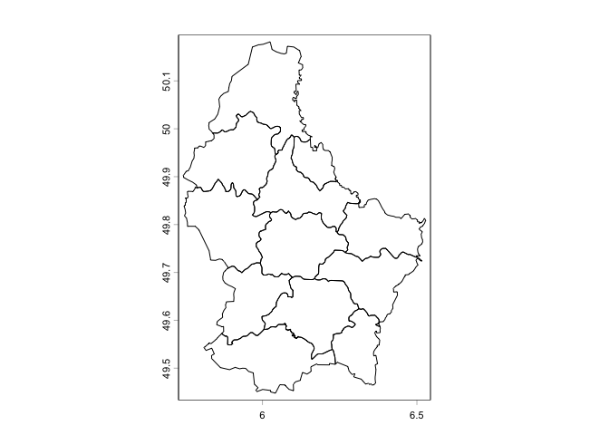
We mapped just the polygons above, but we can also map one of the attributes. Here we show a choropleth map (discussed on pages 73-76 in OSU) of the area of each region AREA.
plot(lux, 'AREA')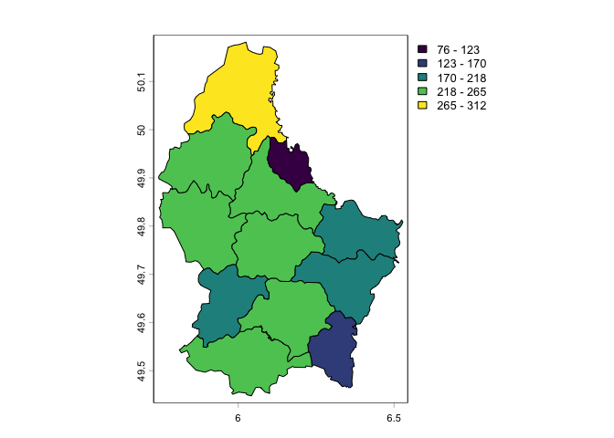
Or plot a categorical variable such as the name of each region
plot(lux, 'NAME_2')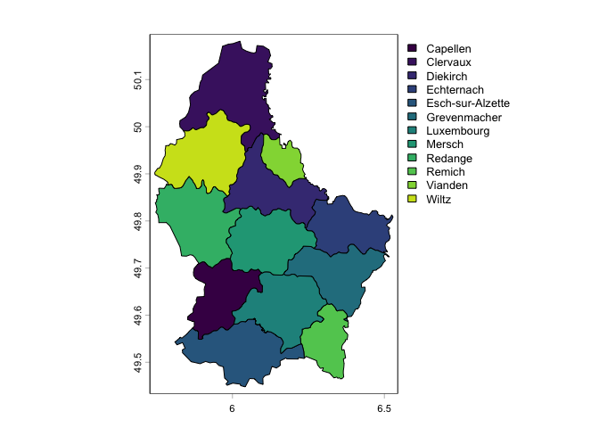
We can manipulate the SpatVector like we would a regular data frame. Here we’ll use base R to manipulate. To extract the attributes (data.frame) from a Spatial object, use:
d <- as.data.frame(lux)
head(d)## ID_1 NAME_1 ID_2 NAME_2 AREA POP
## 1 1 Diekirch 1 Clervaux 312 18081
## 2 1 Diekirch 2 Diekirch 218 32543
## 3 1 Diekirch 3 Redange 259 18664
## 4 1 Diekirch 4 Vianden 76 5163
## 5 1 Diekirch 5 Wiltz 263 16735
## 6 2 Grevenmacher 6 Echternach 188 18899You can extract a variable using the $ convention.
lux$NAME_2## [1] "Clervaux" "Diekirch" "Redange" "Vianden"
## [5] "Wiltz" "Echternach" "Remich" "Grevenmacher"
## [9] "Capellen" "Esch-sur-Alzette" "Luxembourg" "Mersch"Can we use tidyverse functions on SpatVectors?
lux %>%
select(NAME_2)## Error in `UseMethod()`:
## ! no applicable method for 'select' applied to an object of class "SpatVector"Oh oh. terra is not tidy friendly. Hence, why base R is still important to understand, as some important packages have not integrated the tidy workflow (although, see the package tidyterra as an attempt to bridge this integration gap).
Let’s create a new variable, for example a new variable containing AREA multiplied by 100
lux$AREA_100 <- lux$AREA*100Now, sub-setting by variable.
lux[, 'NAME_2']## class : SpatVector
## geometry : polygons
## dimensions : 12, 1 (geometries, attributes)
## extent : 5.74414, 6.528252, 49.44781, 50.18162 (xmin, xmax, ymin, ymax)
## source : lux.shp
## coord. ref. : lon/lat WGS 84 (EPSG:4326)
## names : NAME_2
## type : <chr>
## values : Clervaux
## Diekirch
## RedangeNote how this code is different from the code above it. Above
lux$NAME_2 returns a vector of values is returned. With the
approach directly above you get a new SpatVector with only one
variable.
Selecting rows (records).
g <- lux[lux$NAME_1 == 'Grevenmacher',]
plot(g)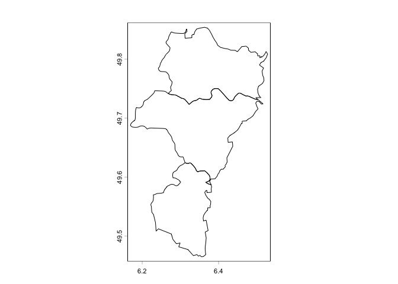
There are other terra spatial data functions you can use to manipulate the polygons. Since we won’t be focusing too much on the terra package for handling vector data in this class, you can learn more about these functions on your own here.
Although useful when working with vector data within the terra universe, it is not the current standard package for processing vector data in R. This designation belongs to the sf package, which was created in 2016. In contrast to the terra package, which uses a rather complex data structure, sf is much easier to use and fits in very naturally with the tidyverse. Which means we can use most of the functions we went through when we learned about the tidyverse package to clean and process sf spatial objects. This includes mapping vector data using ggplot2, which we will cover later.
sf package
The sf package is the major package for handling vector data in R. It conceives of spatial objects as simple features. What is a feature? A feature is thought of as a thing, or an object in the real world, such as a building or a tree. A wetland preserve can be a feature. As can a city and a neighborhood. Features have a geometry describing where on Earth the features are located, and they have attributes, which describe other properties. The main application of simple feature geometries is to describe two-dimensional geometries by points, lines, or polygons. To learn more about simple features, check out Chapter 2 in GWR.
Reading spatial data
The function for reading in spatial data into R as an
sf object is st_read(). I zipped up and
uploaded onto GitHub a folder containing files for this lab. Set your
working directory to an appropriate folder and use the following code to
download and unzip the file.
#insert the pathway to the folder you want your data stored into
setwd("insert your pathway here")
#downloads file into your working directory
download.file(url = "https://raw.githubusercontent.com/geo200cn/data/master/spatialsflab.zip", destfile = "spatialsflab.zip")
#unzips the zipped file
unzip(zipfile = "spatialsflab.zip")You should see the shapefiles saccityinc.shp,
Rivers.shp, Parks.shp, and EV_Chargers.shp in
the folder you specified in setwd(). These files contain
Sacramento city Census
tract polygons, Sacramento river polylines, Sacramento parks
polygons, and Sacramento
Electric Vehicle Charging Locations points, respectively. You should
also see a csv file sacrace.csv, which contains Sacramento city
Census tract race/ethnic population counts. First, read in the
shapefiles using the sf function
st_read().
saccitytracts <- st_read("saccityinc.shp", stringsAsFactors = FALSE)
parks <- st_read("Parks.shp", stringsAsFactors = FALSE)
rivers <- st_read("Rivers.shp", stringsAsFactors = FALSE)
evcharge <- st_read("EV_Chargers.shp", stringsAsFactors = FALSE)The argument stringsAsFactors = FALSE tells R to keep
any variables that look like a character as a character and not a
factor.
Using class() we find that they are sf
objects
class(saccitytracts)## [1] "sf" "data.frame"Look at saccitytracts
saccitytracts## Simple feature collection with 122 features and 2 fields
## Geometry type: MULTIPOLYGON
## Dimension: XY
## Bounding box: xmin: -121.5601 ymin: 38.43789 xmax: -121.3627 ymax: 38.6856
## Geodetic CRS: NAD83
## First 10 features:
## GEOID medinc geometry
## 1 6067007104 High MULTIPOLYGON (((-121.5076 3...
## 2 6067000400 High MULTIPOLYGON (((-121.4748 3...
## 3 6067006900 Low MULTIPOLYGON (((-121.4729 3...
## 4 6067003102 Medium MULTIPOLYGON (((-121.4457 3...
## 5 6067006400 Low MULTIPOLYGON (((-121.4291 3...
## 6 6067001101 Low MULTIPOLYGON (((-121.4989 3...
## 7 6067009633 Medium MULTIPOLYGON (((-121.4476 3...
## 8 6067001900 Medium MULTIPOLYGON (((-121.4824 3...
## 9 6067009614 High MULTIPOLYGON (((-121.4447 3...
## 10 6067004906 Medium MULTIPOLYGON (((-121.4531 3...The output gives us pertinent information regarding the spatial file, including the type (MULTIPOLYGON), the extent or bounding box, the coordinate reference system, and the variables in the attribute dataset. Read Chapter 2 in GWR if you’d like a brief intro on coordinate reference systems. Most important is the geometry column, which tells you that the object is in spatial format. Click on saccitytracts in your environment window. You’ll find that a window pops up in the top left portion of your interface. Unlike with SpatVector objects, an sf object looks and feels like a regular data frame. The only difference is there is a geometry column. This column “spatializes” the dataset, or lets R know where each feature is geographically located on the Earth’s surface. Check out the other datasets we brought in and determine how they differ from one another.
You can bring in other types of spatial data files other than shapefiles. See a list of these file types here.
Next bring in sacrace.csv which contains Hispanic
(hisp), non-Hispanic Asian (nhasn), non-Hispanic Black
(nhblk), non-Hispanic white (nhwhite) and total
population (tpopr) for tracts in Sacramento city. Use the
function read_csv().
sacrace <- read_csv("sacrace.csv")The function for saving or writing sf objects onto
your hard drive is st_write().
Data transformation
sf objects are data frames. This means that they are
tidy friendly. You can use many of the functions we learned previously
to manipulate sf objects, and this includes our new
best friend the pipe %>% operator. For example, let’s do
the following tasks on saccitytracts.
- Merge in the race/ethnicity and total population variables from
sacrace into saccitytracts using
left_join(). The common ID is GEOID - Create the variable pwh which is the percent of the tract
population that is non-Hispanic white using
mutate() - Keep just the variables GEOID, medinc, and
pwh using the function
select()
We do this in one line of continuous code using the pipe operator
%>%
saccitytracts <- saccitytracts %>%
left_join(sacrace, by = "GEOID") %>%
mutate(pwh = nhwhite/tpopr) %>%
select(GEOID, medinc, pwh)You can also keep certain polygons (i.e. subset rows). For example, keep the tracts that are majority non-white
mwhite <- saccitytracts %>%
filter(pwh < 0.5)
#number of neighborhoods in Sacramento that are majority non white
nrow(mwhite)## [1] 94The main takeaway: sf objects are tidy friendly, so you can use many of the tidy functions on these objects to manipulate your data set.
While tidyverse offers a set of functions for data
manipulation, the sf package offers a suite of
functions unique to manipulating spatial data. Spatial data manipulation
involves cleaning or altering your data set based on the geographic
location of features. Most of these functions start out with the prefix
st_.
Common functions to manipulate sf objects include the following:
st_read()reads a sf object,st_write()writes a sf object,st_crs()gets or sets a new coordinate reference system (CRS),st_transform()transforms data to a new CRS,st_intersection()intersects sf objects,st_union()combines several sf objects into one,st_simplify()simplifies a sf object,st_coordinates()retrieves coordinates of a sf object,st_as_sf()converts a foreign object to a sf object.
To see all of the functions, type in
methods(class = "sf")We won’t go through these functions as the list is quite extensive. You can learn about them in GWR’s excellent guide. The focus of this lab is to learn how to map sf objects, which we’ll get to later in this guide.
Raster data
Raster data is commonly used to represent spatially continuous phenomena such as elevation. A raster divides the world into a grid of equally sized rectangles (referred to as cells or, in the context of satellite remote sensing, pixels) that all have one or more values (or missing values) for the variables of interest. A raster cell value should normally represent the average (or majority) value for the area it covers. However, in some cases the values are actually estimates for the center of the cell (in essence becoming a regular set of points with an attribute). We will focus on regular grids in this class, but know that several other types of grids exist, including rotated, sheared, rectilinear, and curvilinear grids (see chapter 1 of Pebesma and Bivand (2023b)).
In contrast to vector data, in raster data the geometry is not explicitly stored as coordinates. It is implicitly set by knowing the spatial extent and the number of rows and columns in which the area is divided. From the extent and number of rows and columns, the size of the raster cells (spatial resolution) can be computed. While raster cells can be thought of as a set of regular polygons, it would be very inefficient to represent the data that way as coordinates for each cell would have to be stored explicitly. It would also dramatically increase processing speed in most cases. Also in contrast to vector data, the cell of one raster layer can only hold a single value. The value might be continuous or categorical.
The main package for handling raster data in R is terra. The package is built around a number of “classes” of which the SpatVector we already met earlier. The raster class is SpatRaster, which we introduce next.
SpatRaster
A SpatRaster represents multi-layer (multi-variable) raster data. A SpatRaster always stores a number of fundamental parameters describing its geometry. These include the number of columns and rows, the spatial extent, and the Coordinate Reference System. In addition, a SpatRaster can store information about the file in which the raster cell values are stored. Or, if there is no such a file, a SpatRaster can hold the cell values in memory.
A SpatRaster can easily be created from scratch using the
function rast(). The default settings will create a global
raster data structure with a longitude/latitude coordinate reference
system and 1 by 1 degree cells. You can change these settings by
providing additional arguments such as xmin, nrow,
ncol, and/or crs, to the function. You can also change
these parameters after creating the object. If you set the projection,
this is only to properly define it, not to change it. To transform a
SpatRaster to another coordinate reference system
(reprojection) you can use the function warp(). To learn
more about reprojection, check out Chapter 7 in GWR. But
note that in most cases where real data is analyzed, these objects are
created from a file.
Let’s start by creating a SpatRaster from scratch using the
rast() function.
r <- rast(ncol=10, nrow=10, xmin=-150, xmax=-80, ymin=20, ymax=60)
r## class : SpatRaster
## size : 10, 10, 1 (nrow, ncol, nlyr)
## resolution : 7, 4 (x, y)
## extent : -150, -80, 20, 60 (xmin, xmax, ymin, ymax)
## coord. ref. : lon/lat WGS 84 (CRS84) (OGC:CRS84)Dedicated functions report each component: dim() returns
the number of rows nrow, columns ncol and layers
nlyr; ncell() the number of cells (pixels);
res() the spatial resolution; ext() its
spatial extent; and crs() its coordinate reference
system.
SpatRaster r only has the geometry of a raster data
set. That is, it knows about its location, resolution, etc., but there
are no values associated with it. We check this using the function
hasValues().
hasValues(r)## [1] FALSELet’s assign some values. In this case we assign a vector of random
numbers with a length that is equal to the number of raster cells in
r using the function runif().
values(r) <- runif(ncell(r))
r## class : SpatRaster
## size : 10, 10, 1 (nrow, ncol, nlyr)
## resolution : 7, 4 (x, y)
## extent : -150, -80, 20, 60 (xmin, xmax, ymin, ymax)
## coord. ref. : lon/lat WGS 84 (CRS84) (OGC:CRS84)
## source(s) : memory
## name : lyr.1
## min value : 0.005674657
## max value : 0.935946088The raster layer is provided under name. You could also assign cell numbers (in this case overwriting the previous values)
values(r) <- 1:ncell(r)
r## class : SpatRaster
## size : 10, 10, 1 (nrow, ncol, nlyr)
## resolution : 7, 4 (x, y)
## extent : -150, -80, 20, 60 (xmin, xmax, ymin, ymax)
## coord. ref. : lon/lat WGS 84 (CRS84) (OGC:CRS84)
## source(s) : memory
## name : lyr.1
## min value : 1
## max value : 100We can plot this raster object and its values using base
plot().
plot(r)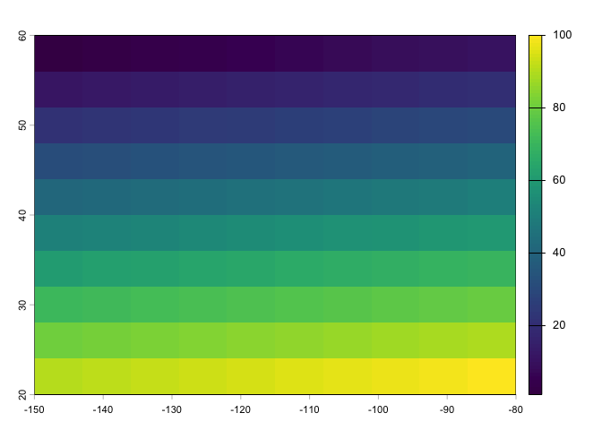
Reading in raster data
In most applications you will bring in a raster dataset directly from a file. The terra package can use raster files in several formats. Supported formats for reading include GeoTIFF, ESRI, ENVI, and ERDAS. Most formats supported for reading can also be written to.
Here is an example using the elev.tif dataset (taken from
the terra package). Use the following code to bring in
the data. The file provides elevation values for Luxembourg. As noted
earlier, do not use this system.file construction for your
own files.
filename <- system.file("ex/elev.tif", package="terra")Now bring in the file using the function rast().
elev <- rast(filename)
elev## class : SpatRaster
## size : 90, 95, 1 (nrow, ncol, nlyr)
## resolution : 0.008333333, 0.008333333 (x, y)
## extent : 5.741667, 6.533333, 49.44167, 50.19167 (xmin, xmax, ymin, ymax)
## coord. ref. : lon/lat WGS 84 (EPSG:4326)
## source : elev.tif
## name : elevation
## min value : 141
## max value : 547We see that this data is a SpatRaster. Remember that raster
data are basically grid data, and the grid we have contains 90 rows, 95
columns, 8550 (90 x 95) cells. There’s also just 1 layer (elevation),
and the min and max values are 141 and 547, respectively. Note that
raster objects may have more than one layer of data values (e.g.,
elev could also include the layers temperature and humidity).
Let’s plot what we got (elevation values) using plot().
plot(elev)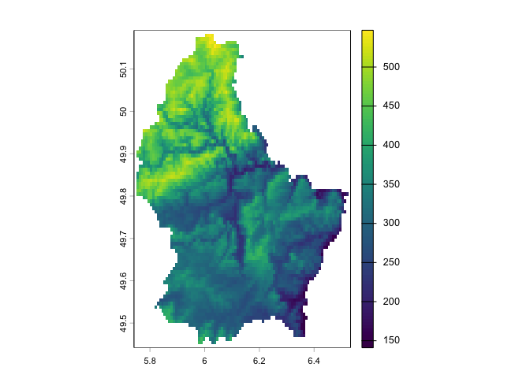
The function for saving or writing raster data onto your hard drive
is writeRaster().
Raster operations
Similar to vector data, you can manipulate raster data, such as assign values to cells, add two rasters, and so on. There are generally four types of raster operations.
- Local: Each output cell value is computed using only the corresponding input cell(s) at the same location.
Most algebraic operations can be applied to rasters as they would with any vector element. You can transform cell values directly. For example, you can add the value one to each cell in the raster r.
r <- r+1You can also add, subtract, multiply etc. two or more layers of the same dimension. For example, we can create a new layer r2 that multiplies the cell values of r by each other.
r2 <- r * rAnother local operation that can be applied to a raster is reclassification. In the following example, we will assign all r values that are less than 50 a 1 and otherwise a 0. A simple way to do this is to apply a conditional statement.
r4 <- r < 50Plot to see if we got what we wanted.
plot(r4)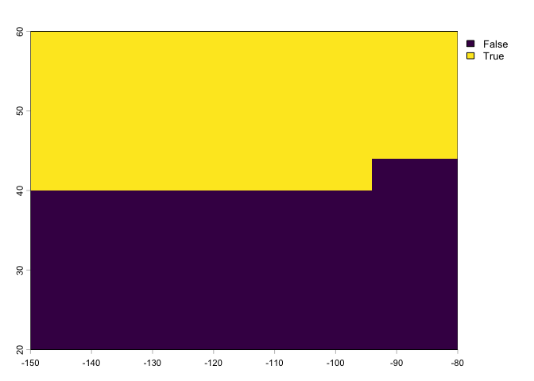
Note that all 0 pixels are coded as FALSE and all 1 pixels are coded
as TRUE. You can also use the terra function
ifel() to assign a value to a cell if it meets a condition
or not.
- Focal: Each output cell value is computed using a neighborhood of surrounding cells (a moving window).
Operations or functions applied focally to rasters involve user
defined neighboring cells. Focal operations can be performed using the
focal() function. For example, to smooth out the elevation
raster by computing the mean cell values over a 11 by 11 cells window,
type:
elev3 <- focal(elev, w = 11,
fun = mean,
expand = TRUE)
plot(elev3)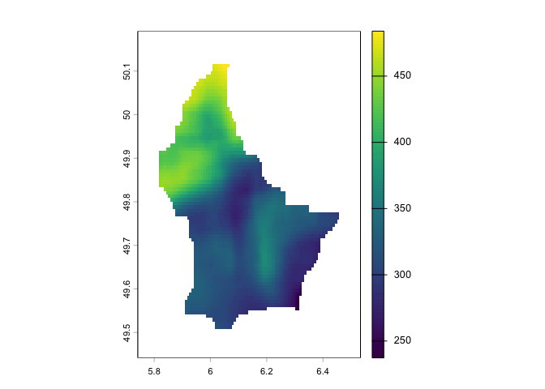
Here, for each cell, you are taking the mean of that cell’s elevation
and the elevation values of the 120 cells surrounding it
(w = 11 means an 11 by 11 window).
- Zonal: Output values are computed for zones (groups of cells) defined by another raster or vector layer.
Zonal operations often involve two layers, one with the values to be
aggregated (raster), the other with the defined zones (polygons or
vector data). Here, you are interested in obtaining a summary statistic
of raster values (e.g. mean, maximum, standard deviation, etc.) within
each polygon. The extract() function allows you to do this.
The function requires a SpatRaster object and either a
SpatVector or sf object. You’ll get practice with this
zonal operation in this week’s assignment.
- Global: Computes a statistic using all cells in the raster at once, returning a single value.
The main global function in terra is
global(). What is the mean value of all cells in the raster
r?
global(r, fun = "mean", na.rm = TRUE)## mean
## lyr.1 51.5We won’t go through all of the possible operations in this guide. You will have an opportunity to explore them in your assignment this week. You can also learn more about functions that manipulate rasters here.
Vector to raster conversion
Rather than bringing in a raster dataset, you often have to convert a vector object, typically polygons or points, into a raster. Polygon to raster conversion is typically done to create a SpatRaster that can act as a mask, i.e. to set to NA a set of cells of a raster object, or to summarize values on a raster by zone. For example a country polygon is transferred to a raster that is then used to set all the cells outside that country to NA; whereas polygons representing administrative regions such as states can be transferred to a raster to summarize raster values by region.
Let’s turn the Luxembourg polygon lux we used earlier into a
raster. In order to change it into a raster object, use the function
rast(), and designate the raster grid (number of
cells).
r <- rast(lux, ncols=75, nrows=100 )The size of each pixel or cell in the raster grid is defined by the
number of columns ncols and rows nrows. You
can also defines the resolution using the res argument.
Plor r
plot(r)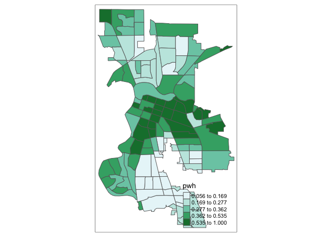
You should get a blank map. Object r only has the skeleton
of a raster data set. That is, the object r created only
consists of the raster geometry, that is, we have defined the number of
rows and columns, and where the raster is located in geographic space,
but there are no cell-values associated with it. The function
rasterize()transfers values associated with ‘object’ type
spatial data (points, lines, polygons) to raster cells. Let’s transfer
the area AREA from lux to their associated raster cell
in r.
vr <- rasterize(lux, r, 'AREA')
plot(vr)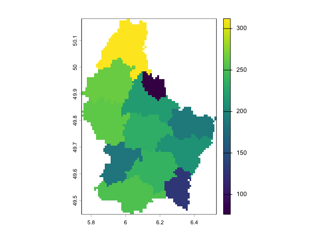
Notice the difference between how this map “looks” compared to the vector data mapped earlier. Why is there a difference?
Point to raster conversion is often done with the purpose to analyze
the point data. For example to count the number of distinct species
(represented by point observations) that occur in each raster cell.
rasterize() takes a SpatRaster object to set the
spatial extent and resolution, and a function to determine how to
summarize the points (or an attribute of each point) by cell.
Mapping
Now that you’ve learned the basics of bringing in and manipulating
spatial data, let’s go through how we can map it. We already created
some maps above, but let’s go through the set of map types discussed in
OSU Ch. 3. We will cover two ways of mapping sf
objects: ggplot() from the ggplot2 package
and tm_shape() from the tmap package.
These are not the only packages that provide mapping functions. We
already used the function plot() from the
base package to create a few simple maps above. But the
tmap and ggplot2 packages are the most
flexible and most used mapping packages in R. See Chapter
9.6 in GWR for a description of other available mapping
packages.
ggplot
Because sf is tidy friendly, it is no surprise we
can use the tidyverse plotting function ggplot() to make
maps. We already received an introduction to ggplot() a few labs
ago. Recall its basic structure:
ggplot(data = <DATA>) +
<GEOM_FUNCTION>(mapping = aes(x, y)) +
<OPTIONS>()In mapping, geom_sf() is
<GEOM_FUNCTION>(). Unlike with functions like
geom_histogram() and geom_boxplot(), we don’t
specify an x and y axis. Instead you use fill if you want to map a
variable or color to just map boundaries.
Let’s use ggplot() to make a choropleth map. Choropleth
maps are discussed on page 73-76 in OSU. We need to specify a numeric
variable in the fill = argument within
geom_sf(). Here we map percent non-Hispanic white
pwh.
ggplot(data = saccitytracts) +
geom_sf(aes(fill = pwh))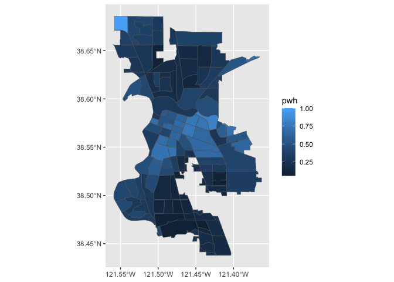
We can also specify a title (as well as subtitles and captions) using
the labs() function.
ggplot(data = saccitytracts) +
geom_sf(aes(fill = pwh)) +
labs(title = "Percent white Sacramento City Tracts") 
The package ggspatial enhances
ggplot2’s mapping capabilities by providing additional
options. For example, we can add a north arrow to the map using the
function annotation_north_arrow().
ggplot(data = saccitytracts) +
geom_sf(aes(fill = pwh)) +
annotation_north_arrow(height = unit(0.75, "cm"),
width = unit(0.75, "cm")) +
labs(title = "Percent white Sacramento City Tracts") And a scale bar using annotation_scale(), where
location = indicates where to put the scale bar (“br” is
bottom right). Scale bars provide a visual indication of the size of
features, and distance between features, on the map.
ggplot(data = saccitytracts) +
geom_sf(aes(fill = pwh)) +
annotation_north_arrow(height = unit(0.75, "cm"),
width = unit(0.75, "cm")) +
annotation_scale(location = "br",
height = unit(0.1, "cm")) +
labs(title = "Percent white Sacramento City Tracts") 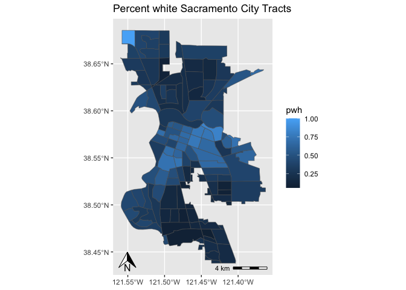
We can make further layout adjustments to the map. Don’t like a blue
scale on the legend? You can change it using the
scale_file_gradient() function. Let’s change it to a white
to red gradient. We can also eliminate the gray tract border colors to
make the fill color distinction clearer. We do this by specifying
color = NA inside geom_sf(). We can also get
rid of the gray background by specifying a basic black and white theme
using theme_bw().
ggplot(data = saccitytracts) +
geom_sf(aes(fill = pwh), color = NA) +
scale_fill_gradient(low= "white", high = "red", na.value ="gray") +
annotation_north_arrow(height = unit(0.75, "cm"),
width = unit(0.75, "cm")) +
annotation_scale(location = "br",
height = unit(0.1, "cm")) +
labs(title = "Percent white Sacramento City Tracts",
caption = "Source: American Community Survey") +
theme_bw()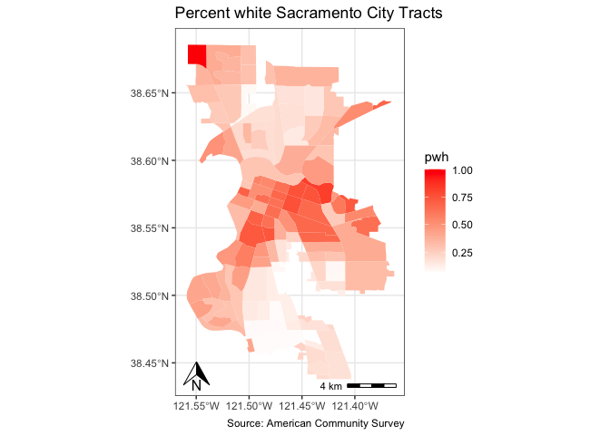
I also added a caption indicating the source of the data using the
captions = parameter within labs().
You also use geom_sf() for mapping points (an example of
a pin map as described in OSU page 66). Color them black using
fill = "black". Let’s map the location of EV chargers in
Sacramento.
ggplot(data = evcharge) +
geom_sf(fill = "black") +
labs(title = "EV Charge Stations Sacramento City Tracts",
caption = "Source: City of Sacramento") +
theme_bw()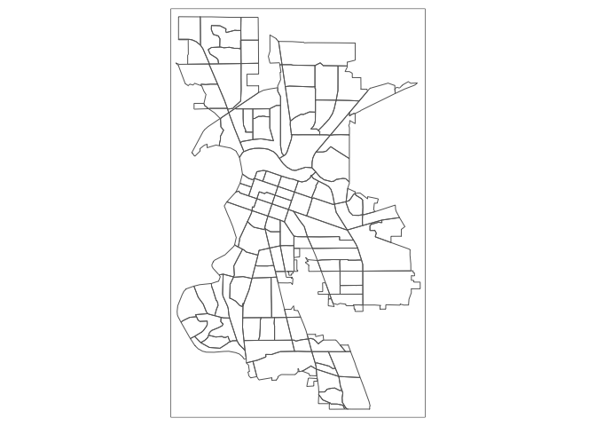
You can overlay the points over Sacramento tracts to give the
locations some perspective. Here, you add two geom_sf() for
the tracts and the EV charge stations.
ggplot() +
geom_sf(data = saccitytracts) +
geom_sf(data = evcharge, fill = "black") +
labs(title = "EV Charge Stations Sacramento City Tracts",
caption = "Source: City of Sacramento") +
theme_bw()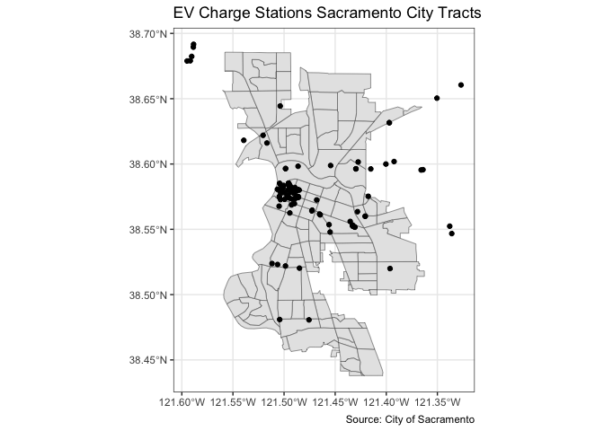
Note that data = moves out of ggplot() and
into geom_sf() because we are mapping more than one spatial
feature.
What about a map of lines? Here is a map of rivers intersecting with Sacramento City.
ggplot() +
geom_sf(data = rivers, col = "blue") +
labs(title = "Sacramento Rivers",
caption = "Source: Sacramento County") +
theme_bw()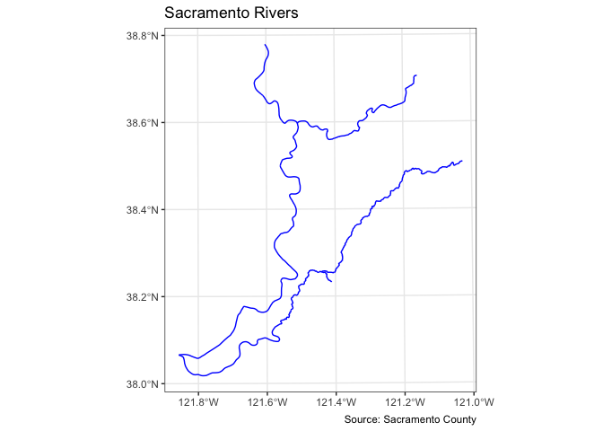
We can use ggplot() to also map raster data. Here, we
plot the raster data set elev we brought in earlier, which
represents elevation in Luxembourg. To create a map of raster data using
ggplot2, we need to transform the data to a data frame
and pass it to geom_raster(). Let’s also plot the
Luxembourg border by creating an sf object using
st_as_sf().
# Transform data to sf object
luxelev <- st_as_sf(as.data.frame(elev, xy = TRUE), coords = c("x", "y"))
# Assign CRS
st_crs(luxelev) <- 4326
# Plot
ggplot(luxelev) +
geom_sf() +
geom_raster(data = as.data.frame(elev, xy = TRUE),
aes(x = x, y = y, fill = elevation))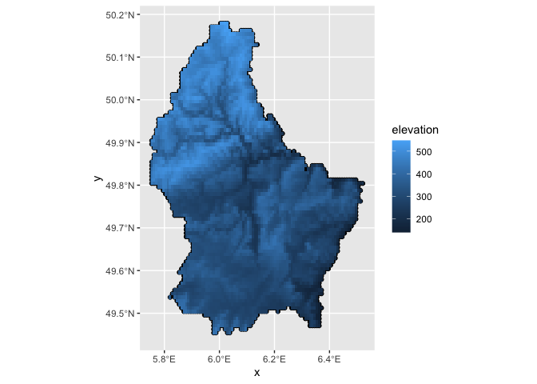
Within aes() you specify the x and y coordinates of the
grid points.
Good additional ggplot2 resources can be found in the open source ggplot2 book (Wickham 2016) and in the descriptions of the multitude of ‘ggpackages’ such as ggrepel and tidygraph.
tmap
Whether one uses the tmap or ggplot2 is a matter of taste, but I find that tmap has some benefits, so let’s focus on its mapping functions next.
tmap uses the same layered logic as ggplot2. The initial command istm_shape(), which specifies the geography to which the
mapping is applied. This is followed by a number of tm_* options that
select the type of map and several optional customizations. Check the
full list of tm_ elements here.
Choropleth map
Let’s make a choropleth map of percent white in Sacramento.
tm_shape(saccitytracts) +
tm_polygons(fill = "pwh")
You first put the dataset saccitytracts inside
tm_shape(). Because you are plotting polygons, you use
tm_polygons() next. If you are plotting points, you will
use tm_dots(). If you are plotting lines, you will use
tm_lines(). The argument fill = "pwh" tells R
to shade the tracts by the variable pwh.
OSU discusses the importance of breaks and classifications on page
75. tmap allows users to specify the classification
style with the fill.scale = argument within
tm_polygons(). For this argument you will need to specify
the style = within tm_scale(). The default
setting uses ‘pretty’ breaks, which rounds breaks into whole numbers
where possible and spaces them evenly. Let’s use
style = "quantile", which tells R to break up the shading
into quantiles, or equal groups of 5. I find that this is where
tmap offers a distinct advantage over
ggplot2 in that users have greater control over the
legend and bin breaks.
tm_shape(saccitytracts) +
tm_polygons(fill = "pwh",
fill.scale = tm_scale(style = "quantile"))You can also change the number of breaks by setting n=.
The default is n=5. Rather than quintiles, you can show
quartiles using n=4
tm_shape(saccitytracts) +
tm_polygons(fill = "pwh",
fill.scale = tm_scale(style = "quantile",
n = 4))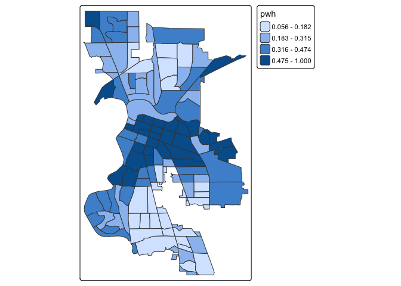
The argument breaks = allows you to manually set the
breaks.
tm_shape(saccitytracts) +
tm_polygons(fill = "pwh",
fill.scale = tm_scale(breaks = c(0, 0.20, 0.4, 0.6, 0.8, 1.0)))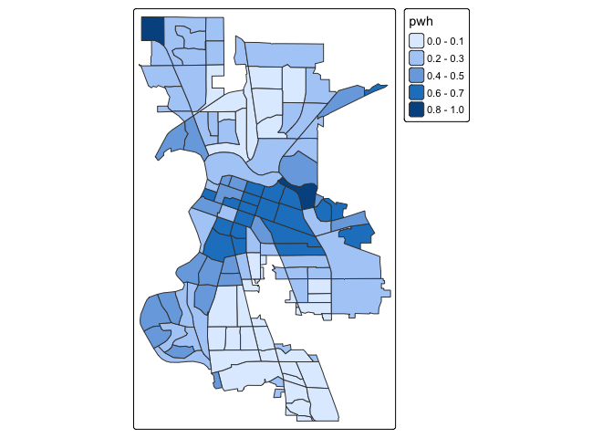
Check out this breakdown of the available classification styles in tmap.
You can overlay multiple features on one map. For example, we can add
park polygons on top of city tracts, providing a visual association
between parks and percent white. You will need to add two
tm_shape() functions each for saccitytracts and
parks.
tm_shape(saccitytracts) +
tm_polygons(fill = "pwh",
fill.scale = tm_scale(style = "quantile",
n = 4)) +
tm_shape(parks) +
tm_polygons(fill = "green")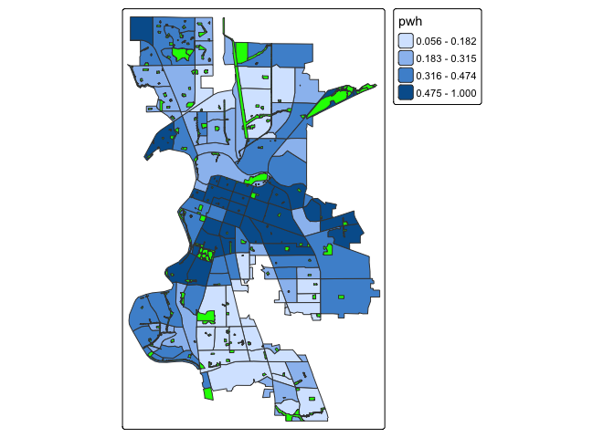
Color scheme
Not into the blue shading? The argument values = within
tm_scale() defines the color ranges associated with the
bins and determined by the style arguments. Several
built-in color palettes are contained in tmap. There
are three main groups of color palettes: categorical, sequential and
diverging, and each of them serves a different purpose. The first group
is sequential palettes. These follow a gradient, for example from light
to dark colors (light colors often tend to represent lower values), and
are appropriate for continuous (numeric) variables. Below we use the
color scheme “reds” using value = "reds".
tm_shape(saccitytracts) +
tm_polygons(fill = "pwh",
fill.scale = tm_scale(style = "quantile",
n = 4,
values = "reds"))## Multiple palettes called "reds" found: "brewer.reds", "matplotlib.reds". The first one, "brewer.reds", is returned.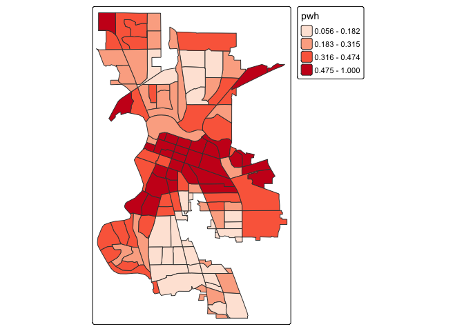
Note the message. Under the hood, “reds” refers to one
of the color schemes supported by the RColorBrewer
package (see below).
The second group, diverging palettes, typically range between three
distinct colors and are usually created by joining two single-color
sequential palettes with the darker colors at each end. Their main
purpose is to visualize the difference from an important reference
point. For instance, if we used c(“red”, “blue”), the color
spectrum would move from red to purple, then to blue, with in between
shades. In our example:
tm_shape(saccitytracts) +
tm_polygons(fill = "pwh",
fill.scale = tm_scale(style = "quantile",
values = c("red","blue")))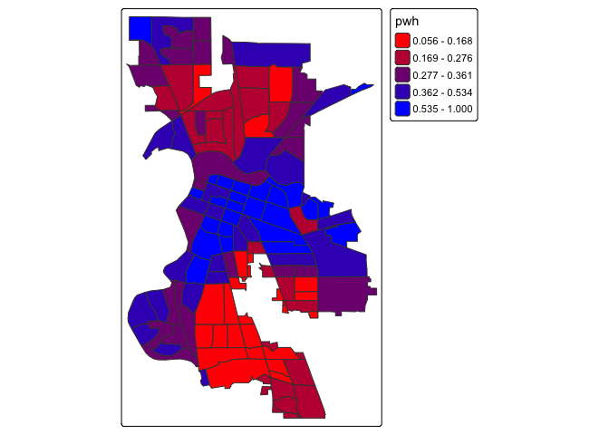
In order to capture a clearer diverging scale, we insert “white” in between red and blue.
tm_shape(saccitytracts) +
tm_polygons(fill = "pwh",
fill.scale = tm_scale(style = "quantile",
values = c("red","white", "blue")))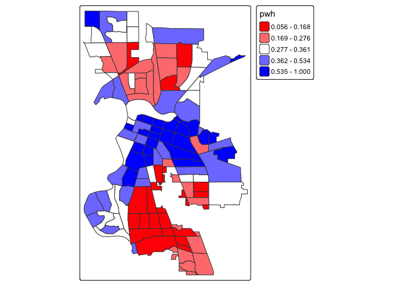
A preferred approach to select a color palette is to chose one of the
schemes contained in the RColorBrewer package. These
are based on the research of cartographer Cynthia Brewer (see the
colorbrewer2 web
site for details). ColorBrewer makes a distinction between
sequential scales (for a scale that goes from low to high), diverging
scales (to highlight how values differ from a central tendency), and
qualitative scales (for categorical variables). For each scale, a series
of single hue and multi-hue scales are suggested. In the
RColorBrewer package, these are referred to by a name
(e.g., the “brewer.reds” palette we used above is an example). The full
list is contained in the RColorBrewer documentation.
You should have noticed from the messages produced from the mapping
above that the default “reds” palette is from RColorBrewer. You can
avoid seeing this message in the future by specifying “brewer.reds” for
values =.
There are two very useful commands in this package. One sets a color palette by specifying its name and the number of desired categories. The result is a character vector with the hex codes of the corresponding colors.
For example, we select a sequential color scheme going from blue to
green, as BuGn, by means of the command
brewer.pal, with the number of categories (6) and the
scheme as arguments. The resulting vector contains the HEX codes for the
colors.
pal <- brewer.pal(6,"BuGn")
pal## [1] "#EDF8FB" "#CCECE6" "#99D8C9" "#66C2A4" "#2CA25F" "#006D2C"The command display.brewer.pal() allows us to explore
different color schemes before applying them to a map. For example:
display.brewer.pal(6,"BuGn")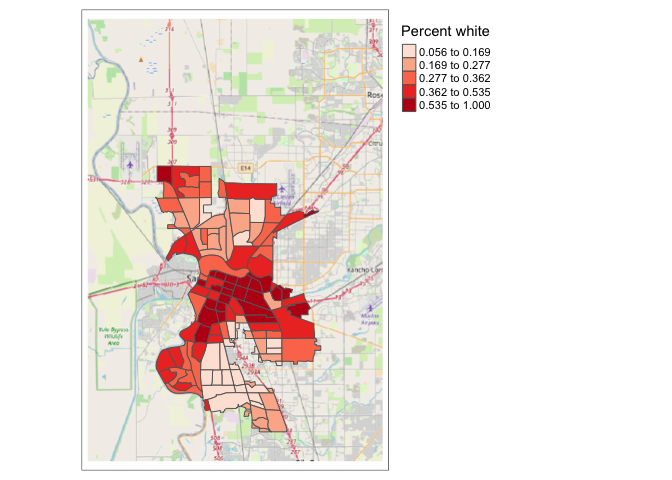
Using this palette in our map yields the following result.
tm_shape(saccitytracts) +
tm_polygons(fill = "pwh",
fill.scale = tm_scale(style = "quantile",
values = pal))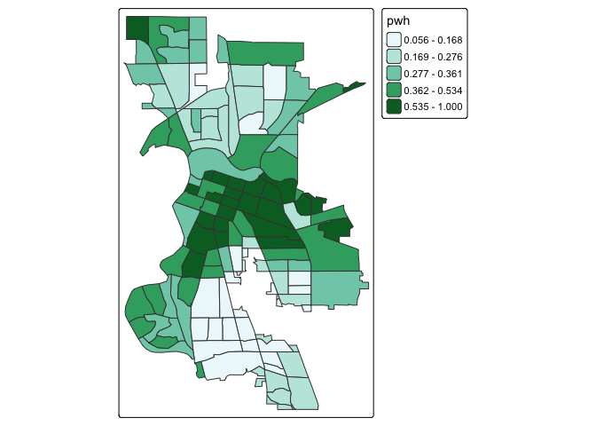
The third group, categorical patterns, will be covered later when we discuss color patch maps. See Ch. 9.2.4 in GWR for a fuller discussion on color and other schemes you can specify.
Legend
There are many options to change the formatting of the legend. Use
the tm_legend() function within tm_polygons()
to change its title, position, orientation, or even disable it. Often,
the automatic title for the legend is not intuitive, since it is simply
the variable name (in our case, pwh). This can be customized by
setting the title = argument within the
tm_legend() function.
tm_shape(saccitytracts) +
tm_polygons(fill = "pwh",
fill.scale = tm_scale(style = "quantile",
values = "reds"),
fill.legend = tm_legend(title = "Percent white"))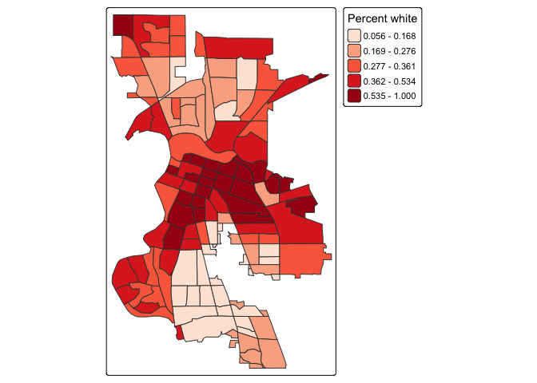
Another important aspect of the legend is its positioning. This is
handled through the position = argument within
tm_legend(). The default is to position the legend outside
of the map frame at the top right. Often, this default solution is
appropriate, but sometimes further control is needed. We can move the
legend outside or inside the mapping frame using the functions
tm_pos_out(), which keeps the legend outside of the map
frame and tm_pos_in(), which keeps it inside. Within each
of these functions, you specify two values that represent the horizontal
position (“left”, “center”, or “right”), and the vertical position
(“bottom”, “center”, or “top”). For example, to move the legend to the
bottom right in the inside of the map frame:
tm_shape(saccitytracts) +
tm_polygons(fill = "pwh",
fill.scale = tm_scale(style = "quantile",
values = "reds"),
fill.legend = tm_legend(title = "Percent white",
position = tm_pos_in("right", "bottom")))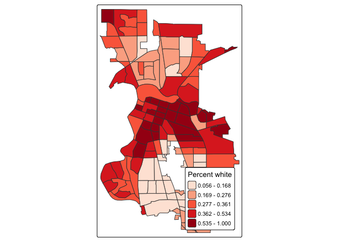
The legend is too big to fit inside the frame without obscuring some
of the map. There are a number of ways to adjust this, but one method is
to adjust the overall scale of the map. This will automatically adjust
the legend. To adjust the scale, you will need to use the argument
scale = within the function tm_layout(), which
is added after the tm_polygons() function, and allows you
to adjust the overall features of a map. The default scale is 1. When
you reduce the scale below 1, the legend shrinks relative to the size of
the map. Let’s reduce it by 0.6, or 40%.
tm_shape(saccitytracts) +
tm_polygons(fill = "pwh",
fill.scale = tm_scale(style = "quantile",
values = "reds"),
fill.legend = tm_legend(title = "Percent white",
position = tm_pos_in("right", "bottom"))) +
tm_layout(scale = 0.6)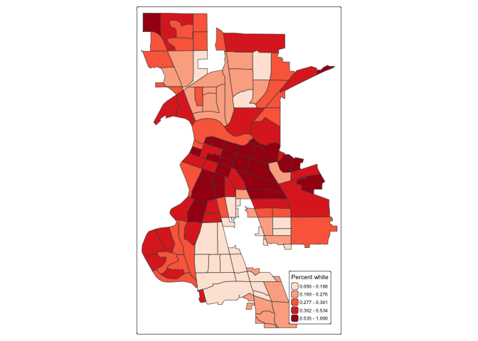
There is also the option to position the legend outside the frame of
the map. This is accomplished by setting
position = tm_pos_out() as such.
tm_shape(saccitytracts) +
tm_polygons(fill = "pwh",
fill.scale = tm_scale(style = "quantile",
values = "reds"),
fill.legend = tm_legend(title = "Percent white",
position = tm_pos_out("right", "center"))) +
tm_layout(scale = 0.6)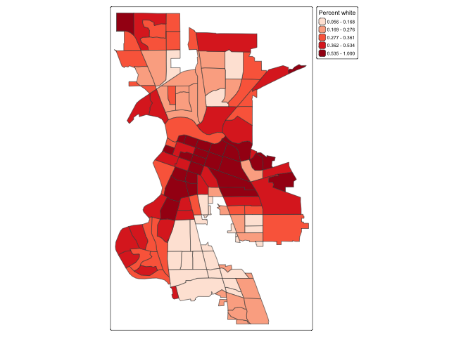
We can also customize the background color of the legend, its
alignment, font, etc. The tm_legend() function has a vast
number of options, as detailed in the documentation.
Also check Ch.
9.2.5 in GWR and the official tmap website for more
examples.
Title
An important feature that you typically include in a map is the
title. We can set the title of the map using the function
tm_title().
tm_shape(saccitytracts) +
tm_polygons(fill = "pwh",
fill.scale = tm_scale(style = "quantile",
values = "reds"),
fill.legend = tm_legend(title = "Percent white",
position = tm_pos_out("right", "center"))) +
tm_title("Percent white Sacramento tracts") +
tm_layout(scale = 0.6)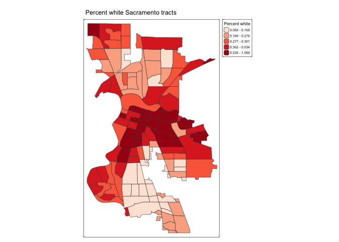
The default position of the title is at the center outside of the
frame. Similar to the legend, you can position the title using the
position = argument and the functions
tm_pos_in() and tm_pos_out(). For example, the
following code moves the the title inside the frame, and positions it
center and right:
tm_shape(saccitytracts) +
tm_polygons(fill = "pwh",
fill.scale = tm_scale(style = "quantile",
values = "reds"),
fill.legend = tm_legend(title = "Percent white",
position = tm_pos_out("right", "center"))) +
tm_title("Percent white Sacramento tracts",
position = tm_pos_in("center", "top")) +
tm_layout(scale = 0.6)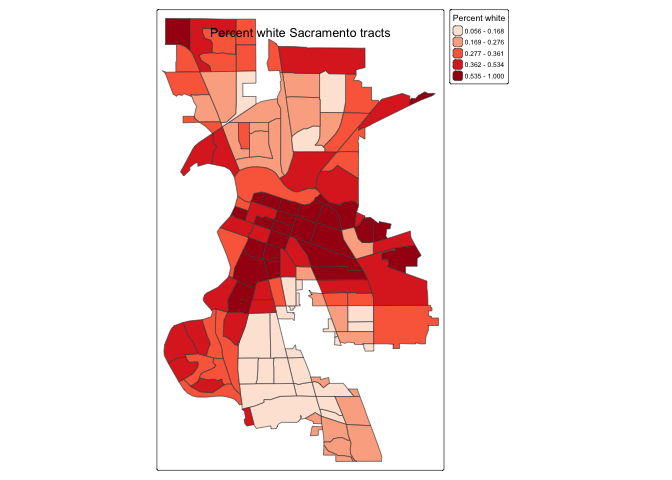
Not good, so we’ll keep it outside.
There are many arguments within tm_title() that will
allow you to change the font type, color, size and other features of the
title.
Other features
We need to add other key elements to the map. First, the scale bar,
which you can add using the function tm_scalebar().
tm_shape(saccitytracts, unit = "mi") +
tm_polygons(fill = "pwh",
fill.scale = tm_scale(style = "quantile",
values = "reds"),
fill.legend = tm_legend(title = "Percent white",
position = tm_pos_out("right", "center"))) +
tm_scalebar(breaks = c(0, 1, 2), text.size = 1,
position = c("left", "bottom")) +
tm_title("Percent white Sacramento tracts") +
tm_layout(scale = 0.6)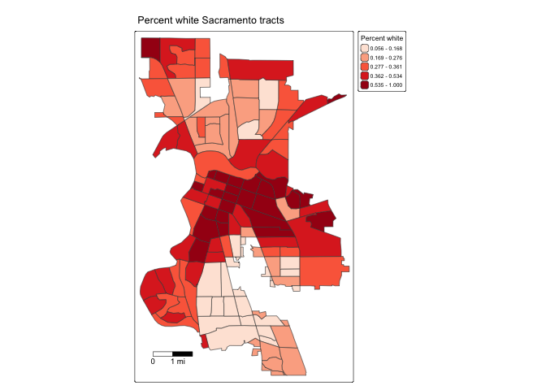
The argument breaks within tm_scalebar()
tells R the distances to break up and end the bar. Make sure you use
reasonable break points. Sacramento is not, for example, 500 miles wide,
so you should not use c(0,10,500) (try it and see what
happens. You won’t like it). Note that the scale is in miles (were in
America!). The default is in kilometers (the rest of the world!), but
you can specify the units within tm_shape() using the
argument unit. Here, we used unit = "mi". The
position = argument locates the scale bar on the bottom
left of the map. The argument text.size = controls the
size of the scale bar.
We can also add a north arrow, which we can add using the function
tm_compass(). You can control for the type, size and
location of the arrow within this function. We place a 4-star arrow on
the bottom right of the map.
tm_shape(saccitytracts, unit = "mi") +
tm_polygons(fill = "pwh",
fill.scale = tm_scale(style = "quantile",
values = "reds"),
fill.legend = tm_legend(title = "Percent white",
position = tm_pos_out("right", "center"))) +
tm_scalebar(breaks = c(0, 1, 2), text.size = 1,
position = c("left", "bottom")) +
tm_title("Percent white Sacramento tracts") +
tm_compass(type = "4star",
position = tm_pos_in("right", "bottom")) +
tm_layout(scale = 0.6)Dot map
OSU talks about dot maps on pages 66-71. We can create a dot or pin
map using tm_dots(). Let’s do so for EV chargers in
Sacramento. We’ll overlay it on top of Sacramento city tract
borders.
tm_shape(saccitytracts) +
tm_borders() +
tm_shape(evcharge) +
tm_dots(fill = "red") +
tm_title("EV Charge Stations Sacramento") +
tm_layout(scale = 0.6)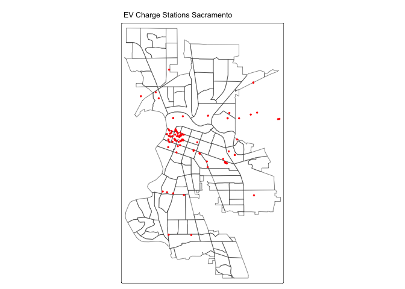
Let’s overlay it on top of polygons shaded by percent white.
tm_shape(saccitytracts, unit = "mi") +
tm_polygons(fill = "pwh",
fill.scale = tm_scale(style = "quantile",
values = "reds"),
fill.legend = tm_legend(title = "Percent white",
position = tm_pos_out("right", "center"))) +
tm_shape(evcharge) +
tm_dots(fill = "black") +
tm_title("EV Charge Stations Sacramento") +
tm_layout(scale = 0.6) +
tm_scalebar(breaks = c(0, 1, 2), text.size = 1,
position = c("left", "bottom")) +
tm_compass(type = "4star",
position = tm_pos_in("right", "bottom")) +
tm_layout(scale = 0.6)Color patch map
OSU page 72 discusses color patch maps, which is a map of polygons
based on a categorical variable. To do this, use
tm_scale_categorical() for the fill.scale =
argument. Let’s map the categorical variable medinc, which has
categories “High”, “Medium” and “Low”.
tm_shape(saccitytracts) +
tm_polygons(fill = "medinc",
fill.scale = tm_scale_categorical(values="Paired"),
fill.legend = tm_legend(position = tm_pos_out("right", "center"))) +
tm_title("Median Income Sacramento") 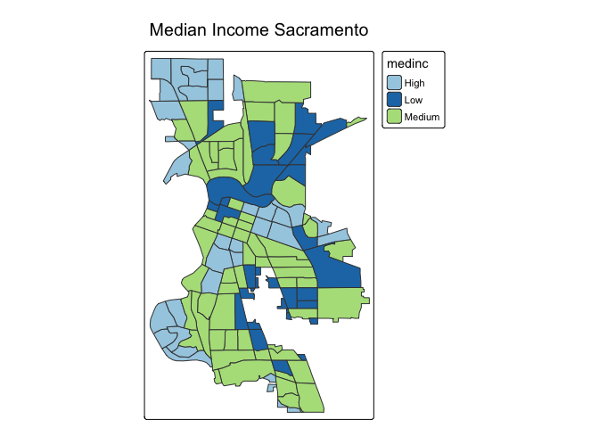
Cartogram
In R, a useful implementation of different types of cartograms is
included in the package cartogram. Specifically, this
supports the area cartograms described in OSU page 78 using
cartogram_cont(). The result of these functions is a simple
features layer, which can then be mapped by means of the usual
tmap commands.
For example, we take the pwh variable to construct an area
cartogram. First, we need to add a projection
to saccitytracts. We do this by using
st_transform(), and we use the UTM
projection.
saccitytracts <-st_transform(saccitytracts,
crs = "+proj=utm +zone=10 +datum=NAD83 +ellps=GRS80") Next, we pass the layer (saccitytracts) and the variable to
the cartogram_cont function. We check that the result is an
sf object.
carto.cont <- cartogram_cont(saccitytracts,"pwh")
class(carto.cont)Which we can map. Is the cartogram a useful visual tool for a variable like percent white?
tm_shape(carto.cont, unit = "mi") +
tm_polygons(fill = "pwh",
fill.scale = tm_scale(style = "quantile",
values = "reds"),
fill.legend = tm_legend(title = "Percent white",
position = tm_pos_out("right", "center")))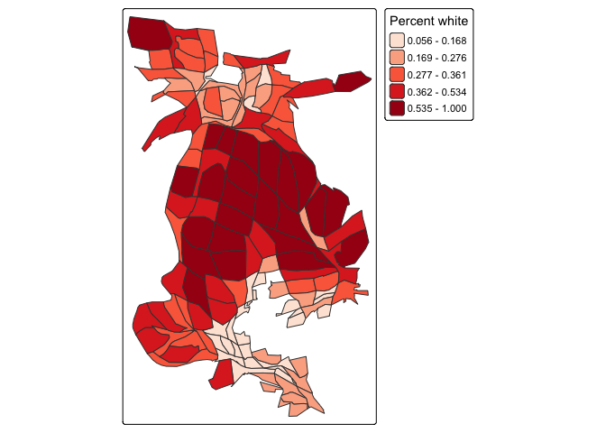
Visualizing raster data
In tmap, single-band raster data are symbolized
using tm_raster(). Here, we plot the raster data set
elev we brought earlier, which represents elevation in
Luxembourg.
tm_shape(elev)+
tm_raster()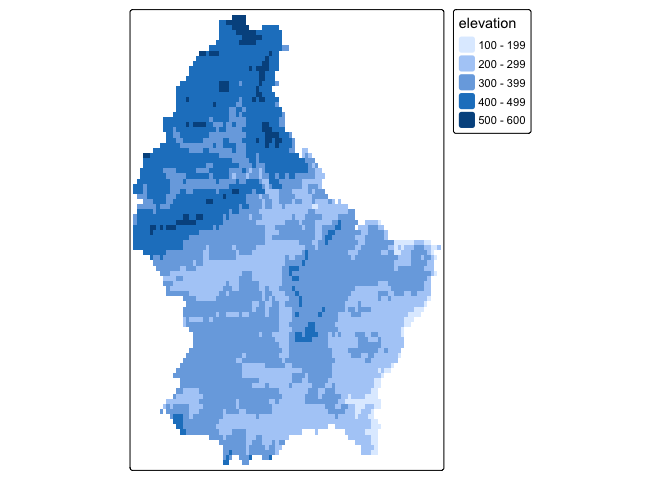
We can use all the same features discussed above for areal data with
raster data. For example, we can adjust the style using
tm_scale_intervals().
tm_shape(elev)+
tm_raster(col.scale = tm_scale_intervals(style = "quantile"))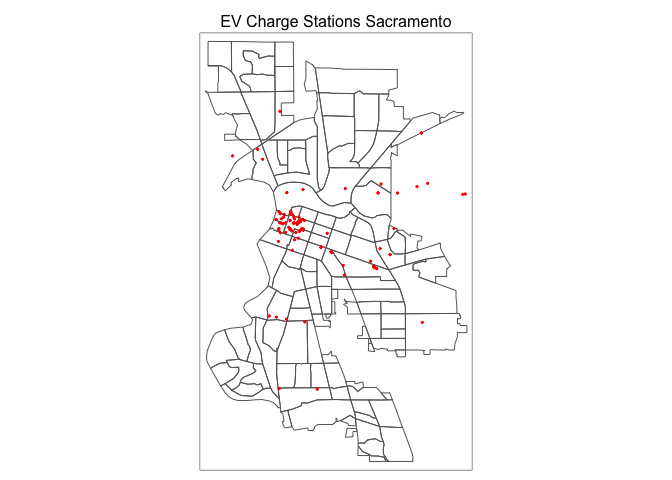
If you do not want to group colors into ranges or bins, you can use
the continuous method where a color ramp is used to display the data
without binning. This is done using
tm_scale_continuous().
tm_shape(elev)+
tm_raster(col.scale = tm_scale_continuous())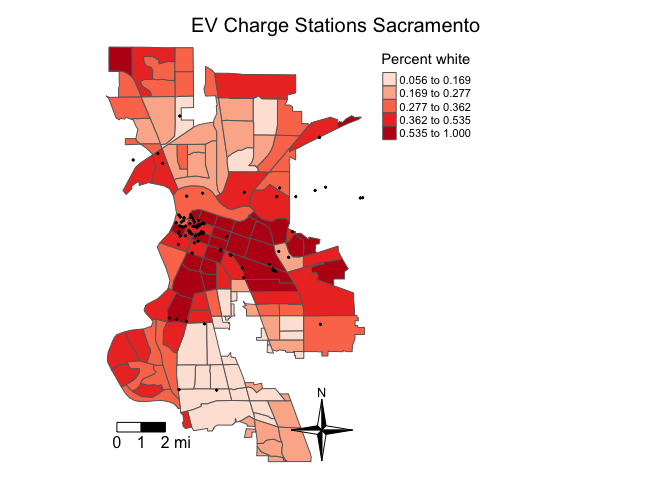
We can also adjust the color. Here, we use brewer.pal
within values = to obtain a grey color scheme.
tm_shape(elev)+
tm_raster(col.scale = tm_scale_intervals(style = "quantile",
n=7, values = brewer.pal("Greys", n = 7)))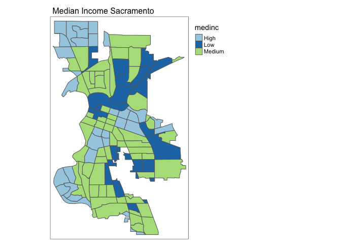
We can also visualize categorical raster data. First, lets create a raster with a categorical variable, in this case regional name.
region <- rasterize(lux, r, 'NAME_2')Next, we can map this variable by setting the style argument equal to cat.
tm_shape(region)+
tm_raster(col.scale = tm_scale_categorical(),
col.legend = tm_legend(title = "Region"))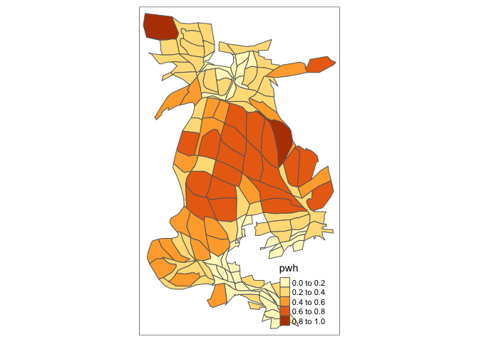
Of course, region is a bit of a trivial example of a raster categorical variable. Something like land cover type or a variable that is spatially granular or best represented as a grid is a better use of a raster categorical representation.
Note that all the map adjustments and additional features we went through above for vector data also apply for making maps of raster objects.
Congratulations for getting through the lab guide! Answer the Assignment 5 questions that are uploaded on Canvas. Submit an R Markdown and its knitted document on Canvas by the assignment due date.
Old spatial packages
If you search online for help and resources on spatial data in R, you
will find information on a number of older packages that users relied on
to process, wrangle and analyze spatial data. Before the
sf package was developed, the sp
package was used to represent and work with vector spatial data. This
package is still used to some extent, but is getting phased out by
sf. Nevertheless, if you are confronted with managing
spatial data in the sp world, check out their official
CRAN
page. The st_as_sf() function in sf
can be used to transform an sp object to an
sf object. The package prior to terra
that was used for processing raster data was raster.
sp as well as the rgdal,
rgeos, raster and
maptools packages are no longer maintained and will
retire.
Resources
This is not a Geographic Information Science class, so we did not touch on the many tools that sf and terra offer for manipulating and managing your spatial data. The best references for cleaning, managing and analyzing spatial data in R are Geocomputation with R (GWR) and Spatial Data Science (SDS). Both are freely available through the links provided.
For more on using ggplot() to map, check out this
and this.

This
work is licensed under a
Creative
Commons Attribution-NonCommercial 4.0 International License.
Website created and maintained by Noli Brazil